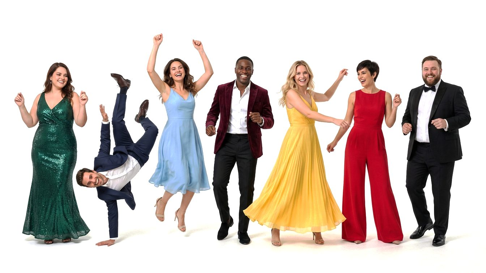

Vos andá y bailá
Sastrería Taya te viste como nunca

Recién llegados al perchero


Imágenes ilustrativas. Vení a conocer la prenda!
Cómo funciona el alquiler
Reservá tu prueba
Elegí un día y una hora para venir al local.
Probate con asesoramiento
Te ayudamos a encontrar la prenda, el talle y el corte.
Retirá tu prenda
Antes de tu fiesta, con los ajustes que necesite.
Devolvela después
La traés al local en la fecha acordada.

Nuestra historia
Sastrería Taya en Santa Lucía año 1940, desde entonces vistiendo siempre con el mejor gusto
Todo dicho en Calidad
Visitanos
- Dirección
- Calle Rivera, Santa Lucía, Canelones
- Horario
- Lunes a sábado, de 10:00 a 12:00 y de 16:00 a 19:30
- Número a confirmar
- @sastreria_taya